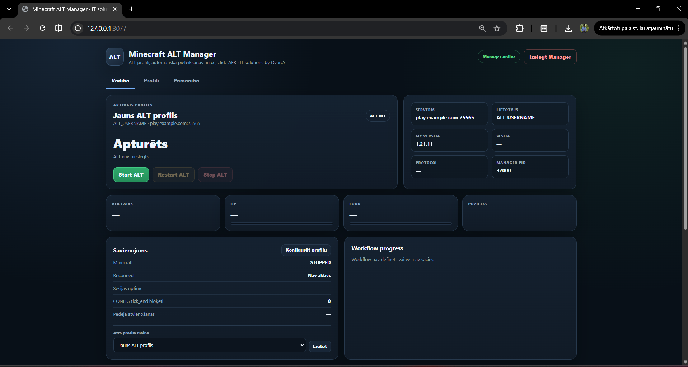
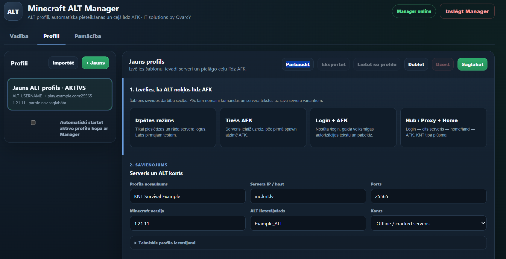
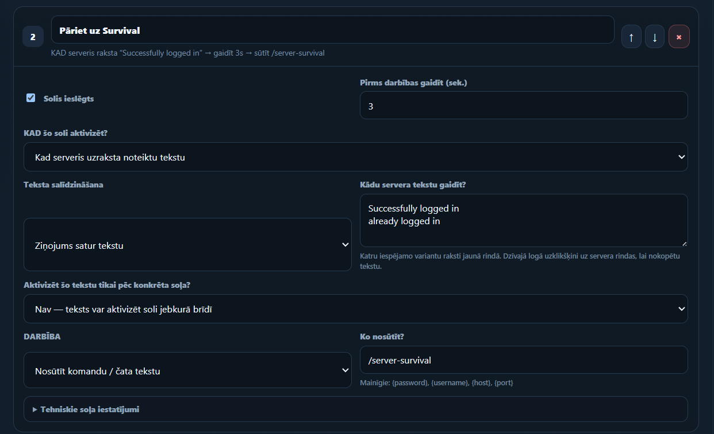
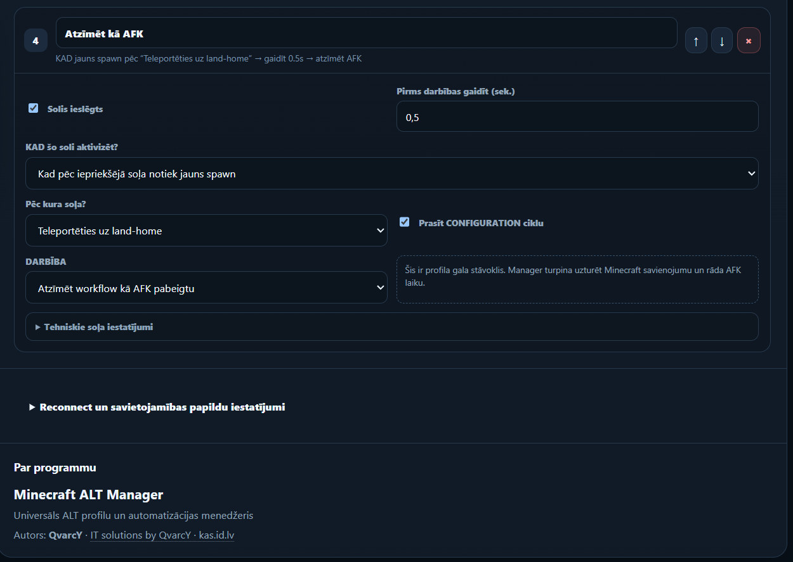

Profiles
Keep server address, ALT identity, authentication and workflow logic together.
Minecraft ALT Manager is a Windows application for configurable ALT profiles, automated login flows, server switching, AFK workflows and reconnect handling.
Profiles describe how an ALT should connect, authenticate, move between servers and recover when something goes wrong.
Keep server address, ALT identity, authentication and workflow logic together.
Build readable automation flows instead of hard-coding one server sequence.
Progressive backoff and circuit-breaker logic help prevent uncontrolled reconnect loops.
Automate proxy or hub transitions and wait for confirmation before continuing.
Login, switch server, teleport to a destination and mark the workflow as AFK.
Saved passwords use Windows DPAPI rather than being stored directly in profile JSON files.
This browser-only simulation demonstrates the ALT Manager flow. It does not contact a Minecraft server or store credentials.
WHEN ALT joins
WAIT 3s → /login ••••WHEN login confirmed
WAIT 3s → /server-survivalWHEN server ready
WAIT 3s → /tp land-homeWHEN destination loaded
MARK AS AFK



The packaged Windows release includes the required Node.js runtime and dependencies. No separate Node.js installation is required.